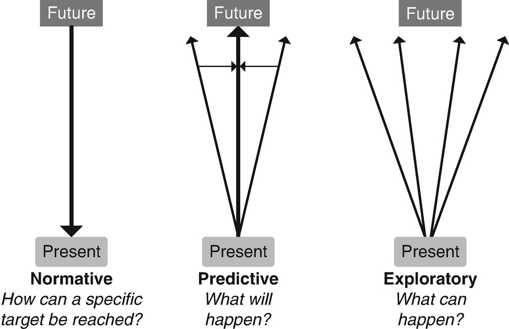
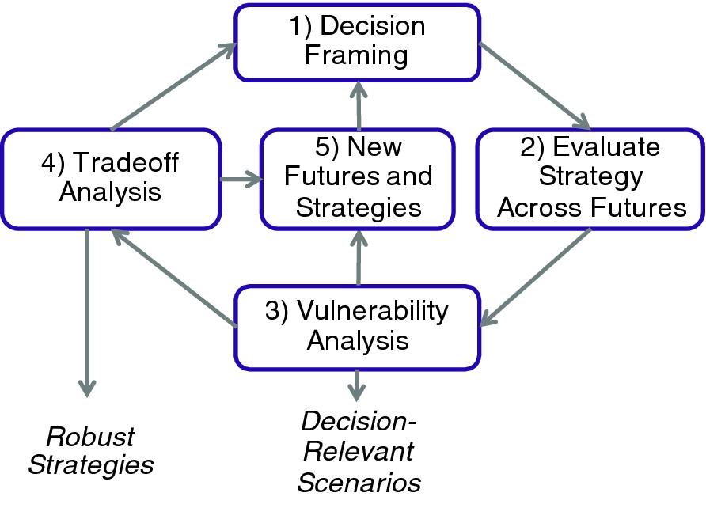
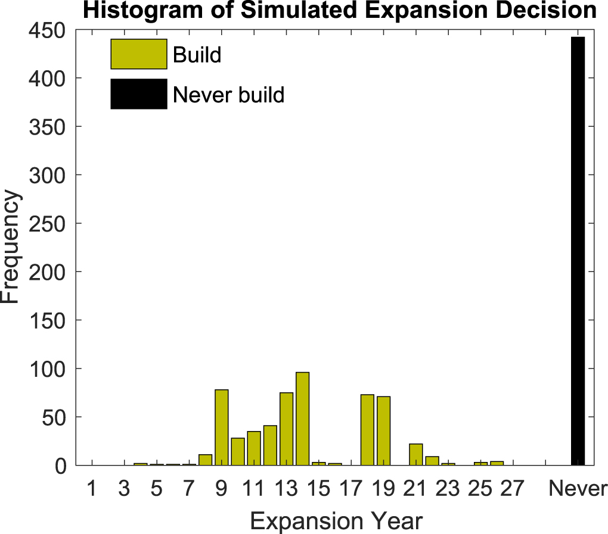
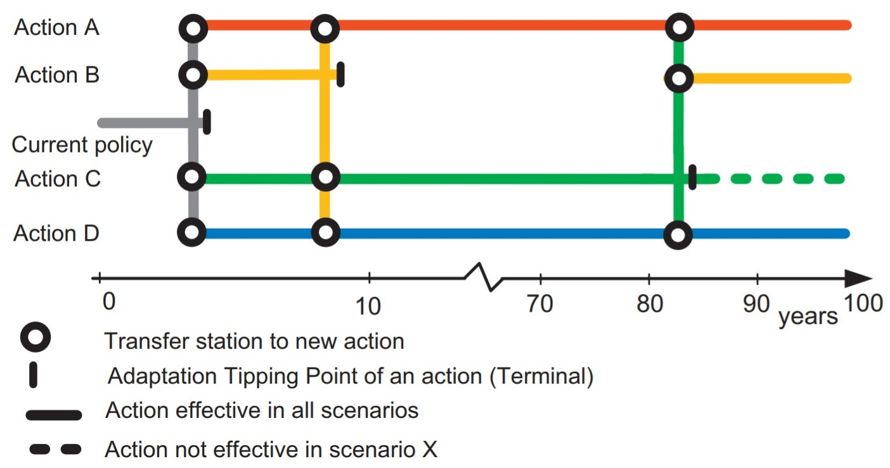

In this mini-lecture we will describe the most classical methods for decision-making under deep uncertainty (DMDU), looking at their applicability and differences.
One typical approach to address uncertain problems is through the evaluation of scenarios as explorations of plausible futures, where sensitivity analyses are carried out on the inputs to see the consequences in the outputs. However, evaluating a deeply uncertain future through a traditional scenario technique has important challenges:
In complex systems, it is difficult to clearly visualise the relationship between inputs and outputs. These are often non-linear, with regions of extreme sensitivity to particular assumptions, and threshold points that are difficult to identify.
The number of possible scenarios that can be analysed are limited, even for visualisation purposes, so instead a small number of plausible alternatives tends to be evaluated, and only those that are believed to contain the most important uncertainties are taken into account. Normally, the entire spectrum of the problem cannot be evaluated.
It is difficult to establish monitoring criteria, decision rules or triggering points for decision-making, as these rely on how the future unfolds.
Hence, in the face of deep uncertainty, the decision-making community is using innovative decision support methods. These tools combine creative thinking of scenario techniques, the capabilities of stress testing and the deliberative process of decision-making in a systematised fashion, thus reducing possible biases. The most commonly used methods will be described in this mini-lecture.
One of the first decision-making under deep uncertainty (DMDU) tools, and the basis of the most recent approaches, is the so-called “Exploratory Analysis,” which is a wide exploration of many alternative scenarios (Bankes1993?) opening up a range of plausible future states. Figure 7.3.1 shows different approaches for analysing future scenarios. The normative approach is based on the best forecast, while the predictive approach intends to account for variability in the future state. On the other hand, the exploratory approach takes a wider look into the future alternatives asking “what if” questions and evaluating all plausible alternatives. Therefore, the exploration of potential futures might guide the decision-making process by finding vulnerabilities and best strategies. In principle, when the future proves hard to predict, plans ought to be robust and flexible (Lempert2019?). One approach is to evaluate this set of future states to identify robust decisions in the present, that is, decisions that work well whatever the future may be. A second, and complementary approach, is to identify decision points to adapt over time, encouraging flexibility for uncertainty management.

Figure 7.3.1: Types of future scenario approaches (McGowan2019?)
Some open source tools have been created with this purpose, such as the Exploratory Modelling Analysis (EMA) Workbench (Kwakkel2017?). This tool has the capability of connecting any model created in different programming languages and softwares, such as Vensim or Excel, to perform computational experiments and deal with uncertainty. The main purpose of the analysis is to find regions of sensitivity, grouping and classification of future states or optimisation of strategies under uncertainty.
Robust decision-making (RDM) is a method that uses analytics to perform an exploratory model allowing the evaluation of hundreds of alternative strategies, uncertainties and possible futures (Groves2007?). RDM starts by proposing possible strategies which are then evaluated against different possible futures, checking vulnerabilities and generating feedback loops to build even better strategies.

Figure 7.3.2: Iterative steps in RDM (Lempert2019?)
Figure 7.3.2 shows the steps of the process:
First, ‘decision framing’ is where stakeholders identify the alternatives, uncertainties and performance indicators they wish to evaluate (wider range).
Second, ‘evaluate strategy across futures’ is a systematic development of the entire spectrum of possible scenarios, generating a range of futures, against which the performance of the originally proposed alternatives will be evaluated.
Third, ‘vulnerability analysis’ is where data mining and machine learning algorithms are used to identify the vulnerabilities of each alternative, which allow modification or unifying alternatives, thus creating new ones. This feedback loop is the most creative process and where the method generates the most value.
Fourth, ‘trade-off analysis’ is where the different alternatives generated are compared based on their performance, such as their robustness (best in most futures), regrets (the difference between the chosen and the optimal solution) or others identified. This step allows a transparent decision-making process for the different stakeholders.
Lastly, based on the results, the process allows to develop new futures and strategies to be evaluated in a new round of analysis.
The RDM method allows iteration and learning in each round of analysis until a satisfactory robust strategy is found.
The previous methods exploit concepts such as the exploration of futures and robustness. In contrast, Real Options Analysis (deNeufville2011?) maintains the exploratory approach and focuses on flexibility – the capability to adapt over time – which is also used in the Dynamic Adaptive Planning approach, described in the next section.
In the treatment of uncertainty, the Real or Engineering Options methodology is able to explore technical alternatives (such as the size, height or capacities) with more depth than other DMDU methods (deNeufville2019?). Therefore, this methodology is well suited for evaluating individual engineering projects under uncertainty. Real Options assumes that adding flexibility has a cost (e.g. building a power plant with the ability to be expanded is more costly than not) and intends to estimate the value of flexibility under future uncertainty. This means, it estimates if the benefit of the added flexibility is worth the cost, given future uncertainty.
Figure 7.3.3 shows the results of 1,000 simulations under different climatological and physical variables. The results computed how many times an expansion of desalination capacity was needed over the lifetime of the project. Therefore, the likeliness and timing of potential expansion can be evaluated by the decision-maker.

Figure 7.3.3: Distribution of desalination capacity added over 1,000 simulations (Fletcher2019?)
The RDM and Real Options methods can be complemented very well with the dynamic adaptive approach (Kwakkel2016?). While the RDM method allows understanding of the functioning of systems, identifies vulnerabilities and allows a transparent comparison between the options, adaptive planning emphasises dynamic adaptation over time.
Figure 7.3.4 shows a simple example of an adaptive pathway applied to long-term planning, where there are four possible strategies: A, B, C and D. The Figure shows the concept of tipping points: where the strategies are no longer satisfactory, a new course of action is required.

Figure 7.3.4: Adaptation pathways map (Haasnoot2013?)
For instance, Actions A and D are effective in the long term (usually these are expensive alternatives or with negative impacts on other fronts). However, if one chooses Action B, it will become necessary to change strategy after 10 years (e.g. due to increased demand), this being a tipping point where the strategy is no longer satisfactory. The same happens with Action C, which needs to be changed in the long term because a tipping point will also be reached (e.g. due to climate change).
In this way, different possible pathways can be generated embedding flexibility that allows adaptation over time to other, better strategies. In practice, the estimation of tipping points or adaptation triggers is not easy but can be obtained (Hall2019?).
In this mini-lecture we explained the need of more sophisticated methods when facing complex systems and a huge range of possible scenarios. Then we described four of the most used methods in practice: exploratory analysis, robust decision making (RDM), real/engineering options and dynamic adaptive pathways.